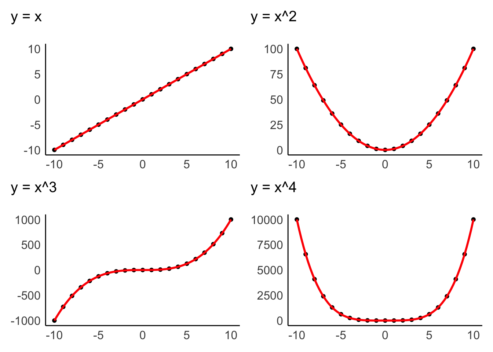
9 Sources of bias: Outliers, normality and other ‘conundrums’
’Bias’ in your analysis is hardly ever a good thing unless you are a qualitative researcher. Whether you consider it positive or negative, we have to be aware of issues preventing us from performing a specific type of analysis. All of the statistical computations discussed in the following chapters can easily be affected by different sources of bias. The lack of certain biases can be an assumption of particular statistical tests. Thus, violating these assumptions would imply that the analytical technique we use will produce wrong results, i.e. biased results. Field (2013) summarises three main assumptions we have to consider:
Linearity and additivity,
Independence,
Normality, and
Homogeneity of variance, i.e. homoscedasticity.
Most parametric tests require that all assumptions are met. If this is not the case, we have to use alternative approaches, i.e. non-parametric tests. The distinction is essential since parametric and non-parametric tests are based on different computational methods, leading to different outcomes.
Lastly, Field (2013) also mentions outliers as an important source of bias. Irrespective of whether your data fulfils the assumptions for parametric tests, outliers tend to be a significant problem. They usually lead to wrong results and, consequently, to misinterpretations of our findings. We will also cover how we can identify and handle such outliers in our data at the end of this chapter.
9.1 Linearity and additivity
The assumption of linearity postulates that the relationship of variables represents a straight line and not a curve or any other shape. Figure @ref(fig:linear-nonlinear-relationships) depicts examples of how two variables could be related to each other. Only the first one demonstrates a linear relationship, and all other plots would represent a violation of linearity.
Data visualisations are particularly useful to identify whether variables are related to each other in a linear fashion. The examples above were all created with geom_point(), which creates a dot plot that maps the relationship between two variables. In Chapter @ref(correlations), we will look more closely at the relationship of two variables in the form of correlations, which measure the strength of a linear relationship between variables.
Additivity is given when the effects of all independent variables can be added up to obtain the total effect they have on a dependent variable. In other words, the effect that multiple variables have on another variable can be added up to reflect their total effect.
If we assume that we have a dependent variable \(Y\) which is affected by other (independent) variables \(X\), we could summarise additivity and linearity as a formula:
\(Y = \beta_{1} * X_1 + \beta_{2} * X_{2} + ... + \beta_{n} * X_{n}\)
The \(\beta\) (beta) stands for the degree of change in a variable \(X\) causes in \(Y\). Or, in simpler terms, \(\beta\) reflects the impact an independent variable has on the dependent variable. We will return to this equation in Chapter @ref(regression), where we create a linear model via regression.
9.2 Independence {sec-independence}
The notion of independence is an important one. It assumes that each observation in our dataset is independent of other observations. For example, imagine my wife Fiona and I take part in a study that asks us to rank movies by how much we like them. Each of us has to complete the ranking by ourselves, but since we both sit in the same living room, we start chatting about these movies. By doing so, we influence each other’s rankings and might even agree on the same ranking. Thus, our scores are not independent from each other. On the other hand, suppose we were both sitting in our respective offices and rank these movies. In that case, the rankings could potentially still be very similar, but this time the observations are independent of each other.
There is no statistical measurement or plot that can tell us whether observations are independent or not. Ensuring independence is a matter of data collection and not data analysis. Thus, it depends on how you, for example, designed your experiment, or when and where you ask participants to complete a survey, etc. Still, this criterion should not be downplayed as being a ‘soft’ one, just because there is no statistical test, but should remain on your radar throughout the planning and data collection stage of your research.
9.3 Normality
We touched upon the notion of ‘normality’ and ‘normal distributions’ before in Chapter @ref(spread-of-data) because it refers to the spread of our data. Figure @ref(fig:normal-distribution2) should look familiar by now.
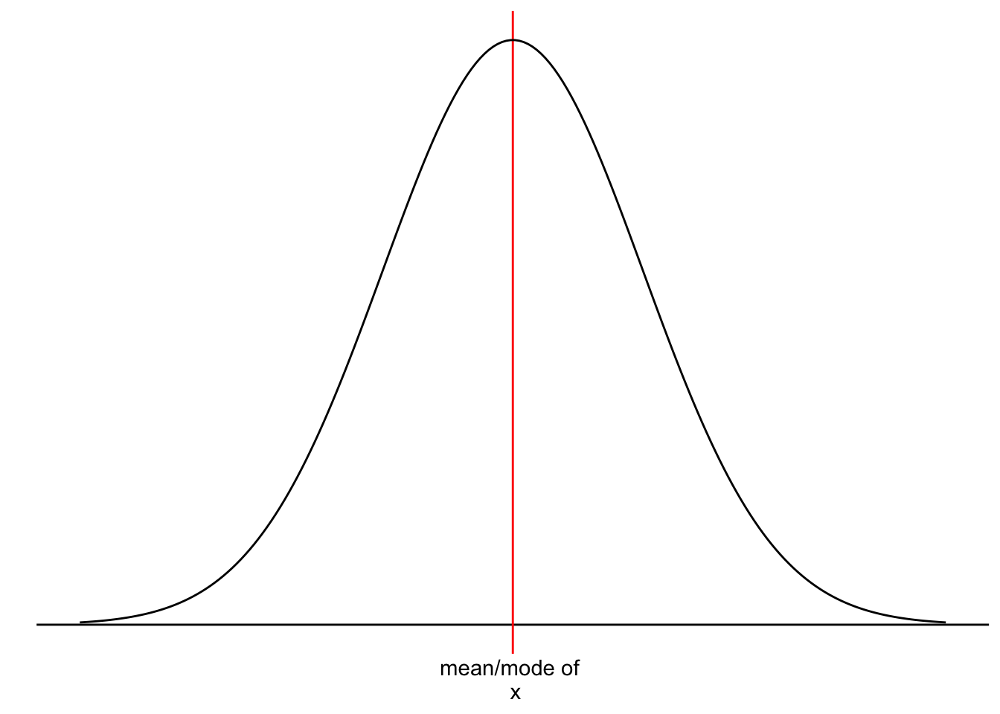
However, we have yet to understand why it is essential that our data follows a normal distribution. Most parametric tests are based on means. For example, if we want to compare two groups with each other, we would compute the mean for each of them and then see whether their means differ from each other in a significant way (see Chapter @ref(comparing-groups). Of course, if our data is not very normally distributed, means are a poor reference point for most of the observations in this group. We already know that outliers heavily affect means, but even without outliers, the mean could be a poor choice. Let me provide some visual examples.
Warning in geom_text(aes(x = mean(income) - 15, y = 2e-04, label = "mean", : All aesthetics have length 1, but the data has 11 rows.
ℹ Did you mean to use `annotate()`?Warning in geom_text(aes(x = median(income) + 15, y = 0.00024, label = "median", : All aesthetics have length 1, but the data has 11 rows.
ℹ Did you mean to use `annotate()`?Warning in geom_text(aes(x = mean(income) + 25, y = 2e-04, label = "mean", : All aesthetics have length 1, but the data has 13 rows.
ℹ Did you mean to use `annotate()`?Warning in geom_text(aes(x = median(income) - 30, y = 0.00024, label = "median", : All aesthetics have length 1, but the data has 13 rows.
ℹ Did you mean to use `annotate()`?Warning in geom_text(aes(x = mean(income) - 15, y = 2e-04, label = "mean", : All aesthetics have length 1, but the data has 12 rows.
ℹ Did you mean to use `annotate()`?Warning in geom_text(aes(x = median(income) + 15, y = 0.00024, label = "median", : All aesthetics have length 1, but the data has 12 rows.
ℹ Did you mean to use `annotate()`?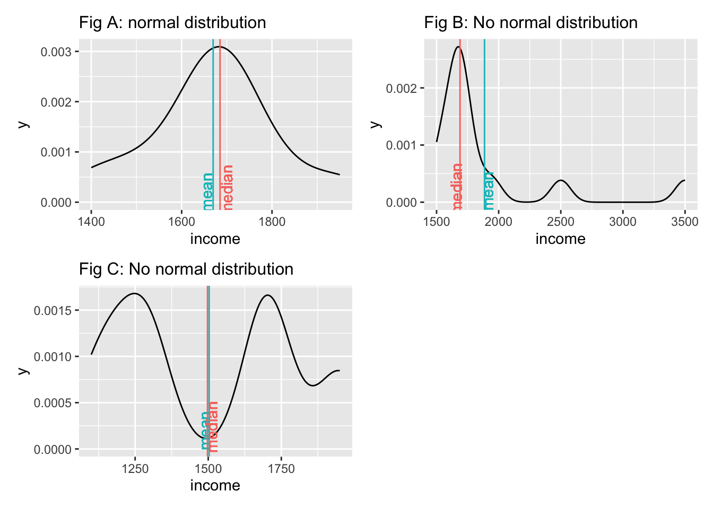
We notice that neither the median nor the mean by themselves is a reliable indicator for normality. Figure A and Figure C both show that the median and mean are almost identical, but only Figure A follows a normal distribution. The median and mean in Figure C are not reflective of the average observation in this dataset. Most scores lie below and above the mean/median. Therefore, when we analyse the normality of our data, we usually are not interested in the normality of a single variable but the normality of the sampling distribution. However, we cannot directly assess the sampling distribution in most cases. As such, we often revert to testing the normality of our data. There are also instances where we would not expect a normal distribution to exist. Consider the following plots:
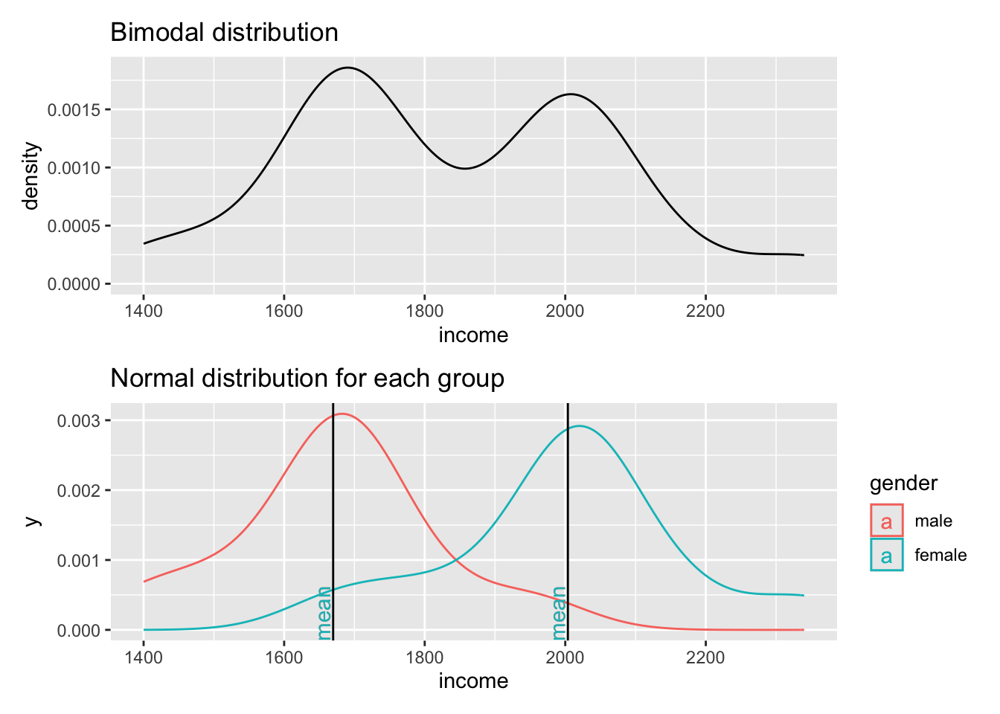
The first plot clearly shows that data is not normally distributed. If anything, it looks more like the back of a camel. The technical term for this distribution is called ‘bimodal distribution’. In cases where our data has even more peaks we consider it as a ‘multimodal distribution’. If we identify distributions that look remotely like this, we can assume that there must be another variable that helps explain why there are two peaks in our distribution. The plot below reveals that gender appears to play an important role. Drawing the distribution for each subset of our data reveals that income is now normally distributed for each group and has two different means. Thus, solely focusing on normal distributions for a single variable would not be meaningful if you do not consider the impact of other variables. If we think that gender plays an important role to understand income levels, we would have to expect that the distribution is not normal when looking at our data in its entirety.
Determining whether data is normally distributed can be challenging when only inspecting plots, e.g. histograms, density plots or QQ plots. Luckily, there is also a statistical method to test whether our data is normally distributed: The Shapiro-Wilk test. This test compares our distribution with a normal distribution (like in our plot) and tells us whether our distribution is significantly different from it. Thus, if the test is not significant, the distribution of our data is not significantly different from a normal distribution, or in simple terms: It is normally distributed. We can run the test in R as follows for the dataset that underpins Fig A above:
shapiro.test(data$income)
Shapiro-Wilk normality test
data: data$income
W = 0.94586, p-value = 0.5916This result confirms that the data is normally distributed, because it is not significantly different (\(p > 0.05\)). The chapter on correlations looks at significance and its meaning more thoroughly (see Chapter @ref(correlations)).
In conclusion, the normality of data is an essential pre-test for any of our studies. If we violate the assumption of normality, we will have to fall back to non-parametric tests. However, this rule has two exceptions: The Central Limit Theorem and using ‘robust’ measures of parametric tests.The Central Limit Theorem postulates that as our sample becomes larger, our sampling distribution becomes more and more normal around the mean of the underlying population. For example, Field (2013) (p.54) refers to a sample of 30 as a common rule of thumb. As such, it is possible to assume normality for larger datasets even though our visualisation and the Shapiro-Wilk test tell us otherwise. The second exception is that many parametric tests offer a ‘robust’ alternative, often via bootstrapping. Bootstrapping refers to the process of subsampling your data, for example, 2000 times, and look at the average outcome. An example of bootstrapping is shown in Chapter @ref(bootstrapped-regression).
Admittedly, this raises the question: Can I ignore normality and move on with my analysis if my sample is large enough or I use bootstrapping? In short: Yes. This fact probably also explains why we hardly ever find results from normality tests in journal publications since most Social Science research involves more than 30 participants. However, if you find yourself in a situation where the sample size is smaller, all of the above needs to be check and thoroughly considered. However, the sample size also has implications with regards to the power of your test/findings (see Chapter @ref(power-analysis)). Ultimately, the answer to the above questions remains, unsatisfyingly: ‘It depends’.
9.4 Homogeneity of variance (homoscedasticity)
The term ‘variance’ should sound familiar, because we mentioned it in Chapter @ref(standard-deviation) where we looked at the standard deviation derived from the variance.
Homogeneity of variance implies that the variance of, for example, two subsets of data, is equal or close to being equal. Let’s look at how close the observed values are to the mean for the two groups identified in Figure @ref(fig:two-normalities-groups).
data4 |>
ggplot(aes(x = gender, y = income, col = gender)) +
geom_jitter(width = 0.1) +
geom_hline(yintercept = group_means$mean[1], color = "red") +
geom_hline(yintercept = group_means$mean[2], color = "turquoise")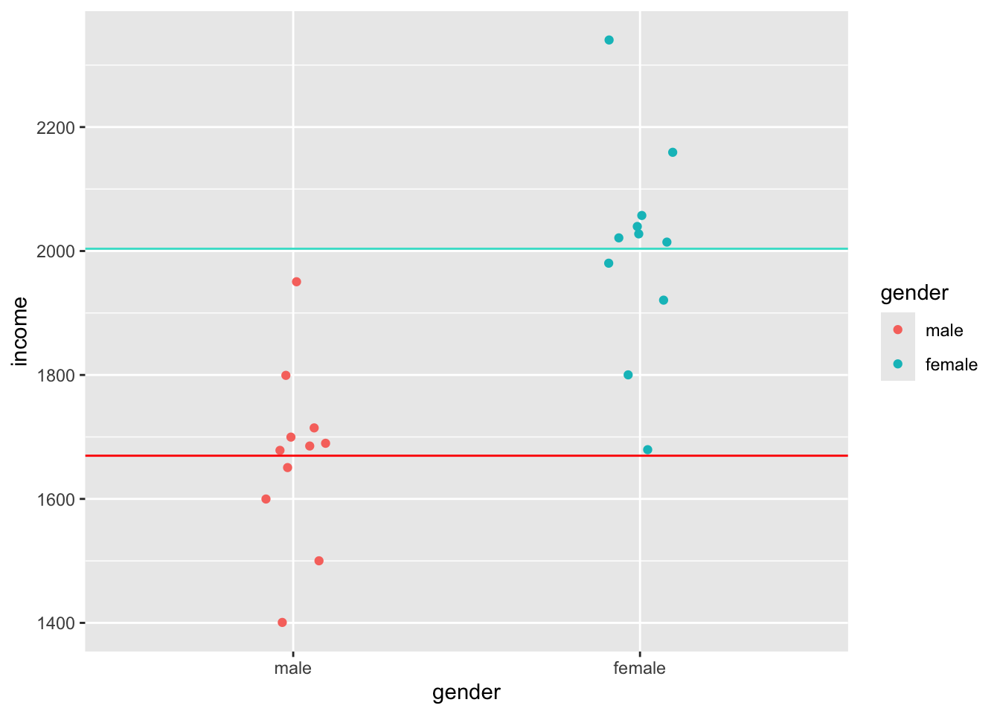
Judging by eye, we could argue that most values lie around the mean for each respective group. However, some observations are a bit further off. Still, using this visualisation, it is tough to judge whether the spread is about the same. However, boxplots can help with this, or even better, a boxplot reflected by a bar. The package ggdist has an excellent plotting function called stat_interval(), which allows us to show a boxplot in the form of a bar.
data4 |>
ggplot(aes(x = gender, y = income, group = gender)) +
ggdist::stat_interval(aes(y = income),
.width = c(0.25, 0.5, 0.75, 1)) +
# Let's add some nice complementary colours
scale_color_manual(values = c("#4D87B3", "#A1D6FF", "#FFDAA1", "#B3915F"))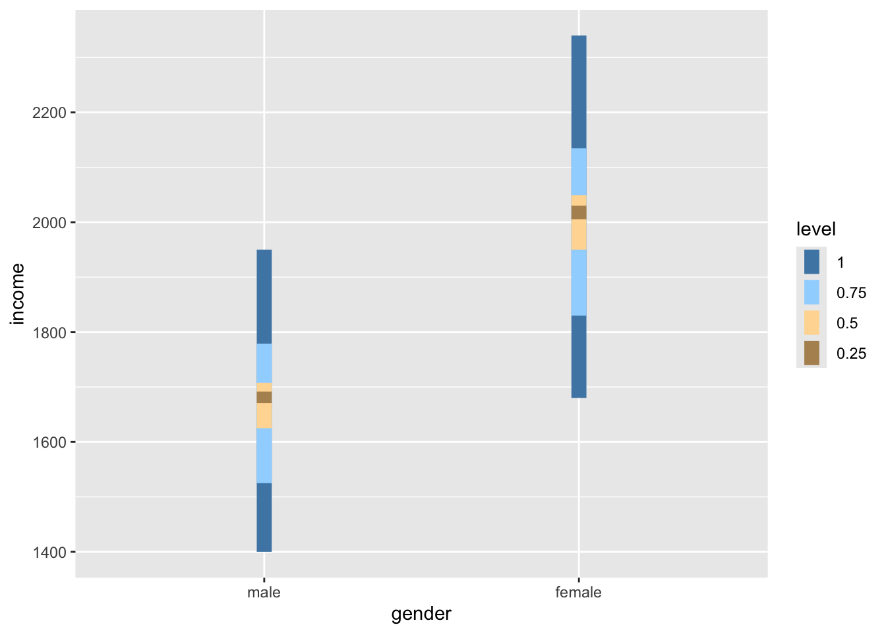
If we compare the bars, we can tell that the variance in both groups looks very similar, i.e. the length of the bars appear to be about the same height. Furthermore, if we compare the IQR for both groups, we find that they are quite close to each other.
data4 |>
group_by(gender) |>
summarise(iqr = IQR(income))# A tibble: 2 × 2
gender iqr
<fct> <dbl>
1 male 82.5
2 female 99 However, to test whether the variance between these two groups is truly similar or different, we have to perform a Levene’s test. The Levene’s test follows a similar logic as the Shapiro-Wilk test. If the test is significant, i.e. \(p < 0.05\), we have to assume that the variances between these groups are significantly different from each other. However, if the test is not significant, then the variances are similar, and we can proceed with a parametric test - assuming other assumptions are not violated. The interpretation of this test follows the one for the Shapiro-Wilk test. To compute the Levene’s test we can use the function leveneTest() from the car package. However, instead of using , to separate the two variables, this function expects a formula, which is denotated by a ~. We will cover formulas in the coming chapters.
car::leveneTest(gep$age ~ gep$gender)Levene's Test for Homogeneity of Variance (center = median)
Df F value Pr(>F)
group 2 0.8834 0.4144
297 The Levene’s test shows that our variances are similar and not different from each other because \(p > 0.05\). This is good news if we wanted to continue and perform a group comparison, like in Chapter @ref(comparing-groups).
9.5 Outliers and how to deal with them
In Chapter @ref(descriptive-statistics), I referred to outliers many times but never eluded to the aspects of handling them. Dealing with outliers is similar to dealing with missing data. However, it is not quite as straightforward as one might think.
In a first step, we need to determine which values count as an outlier. Aguinis, Gottfredson, and Joo (2013) reviewed 232 journal articles and found that scholars had defined outliers in 14 different ways, used 39 different techniques to detect them and applied 20 different strategies to handle them. It would be impossible to work through all these options in this book. However, I want to offer two options that have been frequently considered in publications in the field of Social Sciences:
The standard deviation (SD), and
The inter-quartile range (IQR).
9.5.1 Detecting outliers using the standard deviation
A very frequently used approach to detecting outliers is the use of the standard deviation. Usually, scholars use multiples of the standard deviation to determine thresholds. For example, a value that lies 3 standard deviations above or below the mean could be categorised as an outlier. Unfortunately, there is quite some variability regarding how many multiples of the standard deviation counts as an outlier. Some authors might use 3, and others might settle for 2 (see also Leys et al. (2013)). Let’s stick with the definition of 3 standard deviations to get us started. We can revisit our previous plot regarding runtime_min (see Figure @ref(fig:runtime-movies-deviation)) and add lines that show the thresholds above and below the mean. As before, I will create a base plot outlier_plot first so that we do not have to repeat the same code over and over again. We then use outlier_plot and add more layers as we see fit.
# Compute the mean and the thresholds
runtime_mean <- mean(imdb_top_250$runtime_min)
sd_upper <- runtime_mean + 3 * sd(imdb_top_250$runtime_min)
sd_lower <- runtime_mean - 3 * sd(imdb_top_250$runtime_min)
# Create the base plot
outlier_plot <-
imdb_top_250 |>
select(title, runtime_min) |>
ggplot(aes(x = reorder(title, runtime_min),
y = runtime_min)) +
geom_point(shape = 124) +
theme(axis.text.x = element_blank(),
panel.grid.major = element_blank(),
panel.background = element_blank()
) +
ylab("run time") +
xlab("movies")
# Add the thresholds and mean
outlier_plot +
geom_hline(aes(yintercept = runtime_mean, col = "red"),
show.legend = FALSE) +
geom_hline(aes(yintercept = sd_upper, col = "blue"),
show.legend = FALSE) +
geom_hline(aes(yintercept = sd_lower, col = "blue"),
show.legend = FALSE)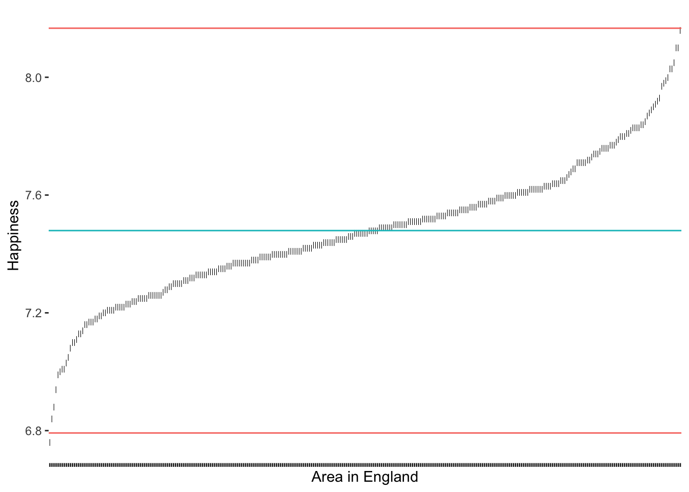
The results suggest that only very few outliers would be detected if we chose these thresholds. Especially Sherlock Jr., the shortest movie in our dataset, would not classify as an outlier. How about we choose 2 standard deviations instead?
# Compute the mean and standard deviation
runtime_mean <- mean(imdb_top_250$runtime_min)
sd_upper <- runtime_mean + 2 * sd(imdb_top_250$runtime_min)
sd_lower <- runtime_mean - 2 * sd(imdb_top_250$runtime_min)
# Create our plot
outlier_plot +
geom_hline(aes(yintercept = runtime_mean, col = "red"),
show.legend = FALSE) +
geom_hline(aes(yintercept = sd_upper, col = "blue"),
show.legend = FALSE) +
geom_hline(aes(yintercept = sd_lower, col = "blue"),
show.legend = FALSE)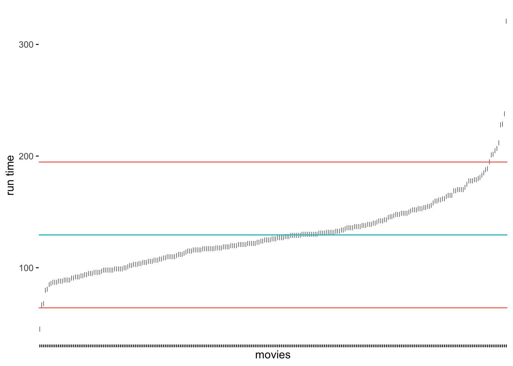
As we would expect, we identify some more movies as being outliers, but the shortest movie would still not be classified as an outlier. It certainly feels somewhat arbitrary to choose a threshold of our liking. Despite its popularity, there are additional problems with this approach:
outliers affect our mean and standard deviation too,
since we use the mean, we assume that our data is normally distributed, and
in smaller samples, this approach might result in not identifying outliers at all (despite their presence) (Leys et al. 2013) (p. 764).
Leys et al. (2013) propose an alternative approach because medians are much less vulnerable to outliers than the mean. Similarly to the standard deviation, it is possible to calculate thresholds using the median absolute deviation (MAD). Best of all, the function mad() in R does this automatically for us. Leys et al. (2013) suggest using 2.5 times the MAD as a threshold. However, if we want to compare how well this option performs against the standard deviation, we could use 3 as well.
# Compute the median and thresholds
runtime_median <- median(imdb_top_250$runtime_min)
mad_upper <- runtime_median + 3 * mad(imdb_top_250$runtime_min)
mad_lower <- runtime_median - 3 * mad(imdb_top_250$runtime_min)
# Create our plot
outlier_plot +
geom_hline(aes(yintercept = runtime_median, col = "red"),
show.legend = FALSE) +
geom_hline(aes(yintercept = mad_upper, col = "blue"),
show.legend = FALSE) +
geom_hline(aes(yintercept = mad_lower, col = "blue"),
show.legend = FALSE)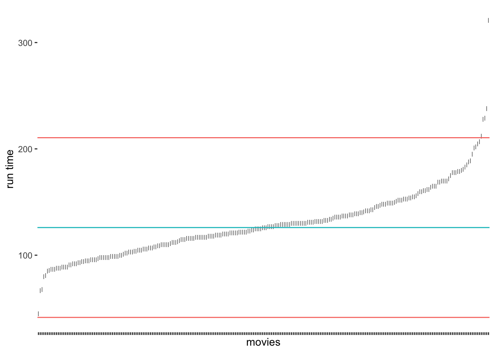
Compared to our previous results, we notice that the median approach was much better in detecting outliers at the upper range of runtim_min. Because the median is not affected so much by the five-hour-long movie, the results have improved. Still, we would not classify the outlier at the bottom for the shortest film in the data. If we chose the criterion of 2.5 * MAD, we would also get this outlier (see Figure @ref(fig:MAD2-outlier-detection)).
2.5 * MAD as a thresholdWhich approach to choose very much depends on the nature of your data. For example, one consideration could be that if the median and the mean of a variable are dissimilar, choosing the median might be the better option. However, we should not forget that the outliers we need to identify will affect the mean. Hence, it appears that in many cases, the median could be the better choice. Luckily, there is yet another highly popular method based on two quartiles (rather than one, i.e. the median).
9.5.2 Detecting outliers using the interquartile range (IQR)
Another approach to classifying outliers is the use of the interquartile range (IQR). The IQR is used in boxplots and creates the dots at its ends to indicate any outliers. This approach is straightforward to implement because the computation of the IQR is simple:
\(IQR = Q_{3}-Q_{1}\)
Therefore, we can create new thresholds for the detection of outliers. For the IQR, it is common to use \(\pm 1.5 * IQR\) as the lower and upper thresholds measured from \(Q_1\) and \(Q_3\) respectively. To compute the quartiles we can use the function quantile(), which returns \(Minimum, Q_1, Q_2, Q_3, and\ Q_4\)
# Compute the quartiles
(runtime_quantiles <- quantile(imdb_top_250$runtime_min)) 0% 25% 50% 75% 100%
45.00 107.00 126.00 145.75 321.00 # Compute the thresholds
iqr_upper <- runtime_quantiles[4] + 1.5 * IQR(imdb_top_250$runtime_min)
iqr_lower <- runtime_quantiles[2] - 1.5 * IQR(imdb_top_250$runtime_min)
# Create our plot
outlier_plot +
geom_hline(aes(yintercept = runtime_median, col = "red"),
show.legend = FALSE) +
geom_hline(aes(yintercept = iqr_upper, col = "blue"),
show.legend = FALSE) +
geom_hline(aes(yintercept = iqr_lower, col = "blue"),
show.legend = FALSE)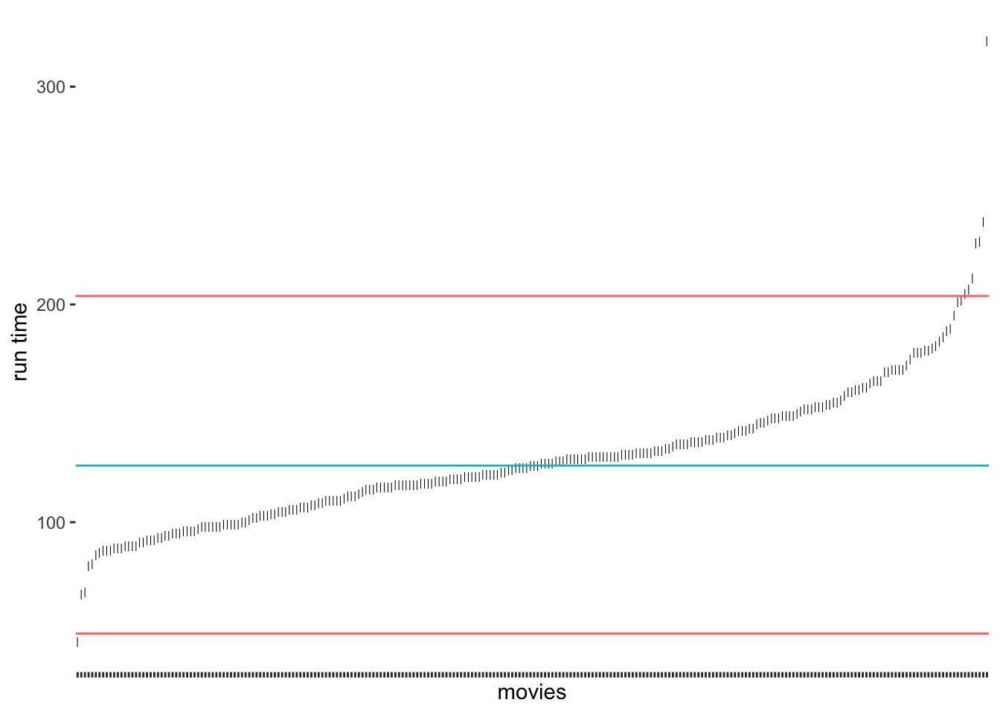
As we can tell, the IQR method detects about the same outliers for our data as the median absolute deviation (MAD) approach. The outliers we find here are the same as shown in Figure @ref(fig:a-boxplot). For our data, I would argue that the IQR and MAD method by Leys et al. (2013) produced the ‘best’ selection of outliers. However, we have to acknowledge that these classifications will always be subjective because how we position the thresholds depends on the researcher’s choice. Still, the computation is standardised, and we can plausibly explain the process of identifying outliers, we just have to make it explicit to the audience of our research.
9.5.3 Removing or replacing outliers
Now that we have identified our outliers, we are confronted with the question of what we should do with them. Like missing data (see Chapter @ref(dealing-with-missing-data)), we can either remove them or replace them with other values. While removal is a relatively simple task, replacing it with other ‘reasonable’ values implies finding techniques to create such values. As you may remember, we were confronted with a similar problem before when we looked into missing data (Chapter @ref(dealing-with-missing-data)). The same techniques, especially multiple imputation (see Cousineau and Chartier 2010), can be used for such scenarios.
Irrespective of whether we remove or replace outliers, we somehow need to single them out of the crowd. Since the IQR strategy worked well for our data, we can use the thresholds we defined before, i.e. iqr_upper and iqr_lower. Therefore, an observation (i.e. a movie) is considered an outlier if
its value lies above
iqr_upper, orits value lies below
iqr_lower
It becomes clear that we somehow need to define a condition because if it is an outlier, it should be labelled as one, but if not, then obviously we need to label the observation differently. Ideally, we want a new column in our dataset which indicates whether a movie is an outlier (i.e. outlier == TRUE) or not (outlier == FALSE). R offers a way for us to express such conditions with the function ifelse(). It has the following structure:
ifelse(condition, TRUE, FALSE)
Let’s formulate a sentence that describes our scenario as an ifelse() function:
If a movie’s
runtime_minis longer thaniqr_upper, orif a movie’s
runtime_minis lower thaniqr_lower,classify this movie as an outlier (i.e.
TRUE),otherwise, classify this movie as not being an outlier (i.e.
FALSE).
We already know from Chapter @ref(basic-computations-in-r) how to use logical and arithmetic operators. All we have to do is put them together in one function call and create a new column with mutate().
imdb_top_250 <-
imdb_top_250 |>
mutate(outlier = ifelse(runtime_min > iqr_upper |
runtime_min < iqr_lower,
TRUE, FALSE))Since we have now a classification, we can more thoroughly inspect our outliers and see which movies are the ones that are lying outside our defined norm. We can arrange() them by runtime_min.
imdb_top_250 |>
filter(outlier == "TRUE") |>
select(title, runtime_min, outlier) |>
arrange(runtime_min)# A tibble: 8 × 3
title runtime_min outlier
<chr> <dbl> <lgl>
1 Sherlock Jr. 45 TRUE
2 Andrei Rublev 205 TRUE
3 Seven Samurai 207 TRUE
4 Ben-Hur 212 TRUE
5 Lawrence of Arabia 228 TRUE
6 Once Upon a Time in America 229 TRUE
7 Gone with the Wind 238 TRUE
8 Gangs of Wasseypur 321 TRUE The list of movies contains some of the most iconic Hollywood films ever shown on screen. However, I think we can agree that most of them are truly outside the norm of regular movies, not just in terms of runtime.
From here, it is simple to remove these movies (i.e. keep the movies that are not outliers) or set their values to NA. If we replace() the values with NA, we can continue with one of the techniques demonstrated for missing values in Chapter @ref(dealing-with-missing-data). Both approaches are shown in the following code chunk.
# Keep all observations but outliers
imdb_top_250 |>
filter(outlier == "FALSE") |>
select(title, outlier)# Replace values with NA
imdb_top_250 |>
mutate(runtime_min = replace(runtime_min, outlier == "TRUE", NA)) |>
select(title, runtime_min)# A tibble: 250 × 2
title runtime_min
<chr> <dbl>
1 The Shawshank Redemption 142
2 The Godfather 175
3 The Dark Knight 152
4 The Godfather: Part II 202
5 12 Angry Men 96
6 The Lord of the Rings: The Return of the King 201
7 Pulp Fiction 154
8 Schindler's List 195
9 Inception 148
10 Fight Club 139
# ℹ 240 more rowsThe replace() function is very intuitive to use. It first needs to know where you want to replace a value (runtime_min), then what the condition for replacing is (outlier == "TRUE"), and lastly, which value should be put instead of the original one (NA).
9.5.4 Concluding remarks about outliers
As you hopefully noticed, understanding your data requires some effort, but it is important to know your data well before proceeding to any further analysis. You can experiment with different data visualisations and design them in a way that best reflects the message you want to get across. For example, because we have added a new variable that classifies outliers, we can do more with our data visualisation than before and highlight them more clearly.
imdb_top_250 |>
ggplot(aes(x = reorder(genre_01, runtime_min),
y = runtime_min,
col = outlier,
shape = outlier)
) +
geom_point(size = 1) +
theme(panel.background = element_blank()) +
coord_flip()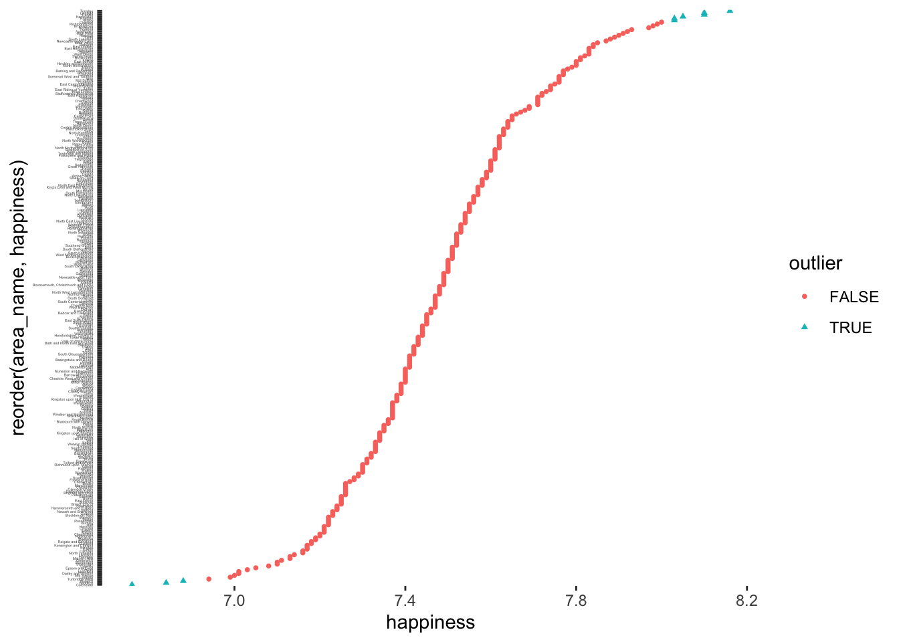
To round things off, let me share with you one more visualisation, which demonstrates that outliers might also have to be defined based on specific groupings of your data, e.g. movie genres. Thus, it might be essential to consider outliers in light of sub-samples of your data rather than the entire dataset, especially when comparing groups (see Chapter @ref(comparing-groups)).
# The wesanderson package can make your plots look more
# 'Wes Anderson'
colour_pal <- wesanderson::wes_palette("Darjeeling1", 11, type = "continuous")
imdb_top_250 |>
ggplot(aes(x = reorder(genre_01, runtime_min),
y = runtime_min,
col = genre_01)
) +
geom_boxplot(alpha = 0,
show.legend = FALSE) +
geom_jitter(width = 0.1,
size = 0.5,
alpha = 0.5,
show.legend = FALSE
) +
scale_color_manual(values = colour_pal) +
coord_flip() +
theme(panel.background = element_blank()) +
xlab("runtime") +
ylab("Genre") +
ggtitle("Distribution of movie runtimes by genre")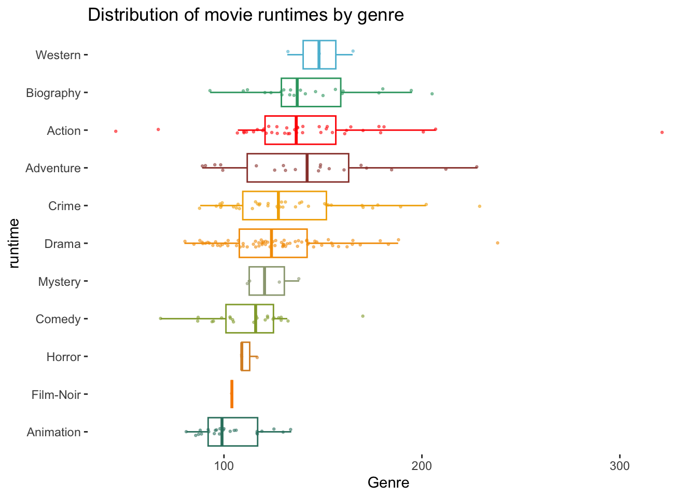